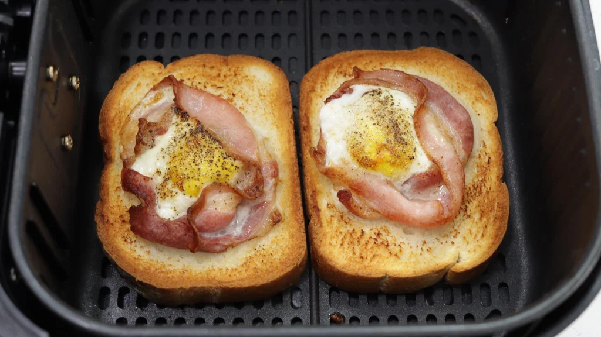

Healthy and Tasty Breakfast

Description
Ingredients:
- toast
- turkey bacon
- 2 eggs
- avocado
- salt
- pepper
- paprika
Steps:
- Place two pieces of toast into the air fryer
- Create a circle on the toast using turkey bacon slices
- Crack an egg into the center of each circle
- Sprinkle salt, pepper, and paprika onto the eggs
- Set air fryer to 400F for 4 minutes
- Carefully take out the toast and plate with avocado slices on the side
- Enjoy!